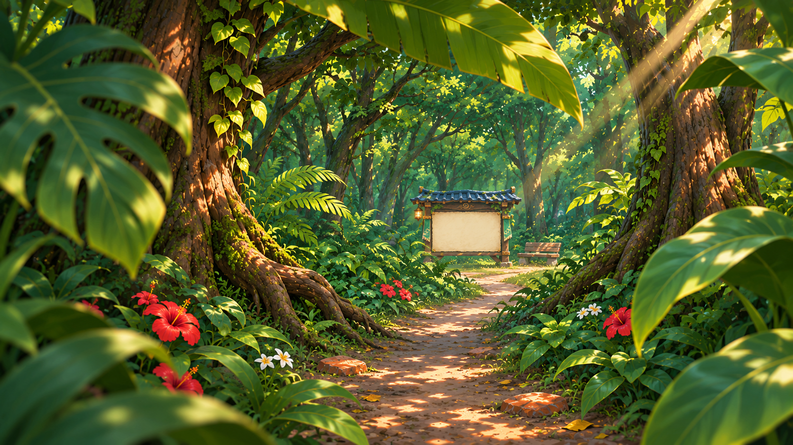
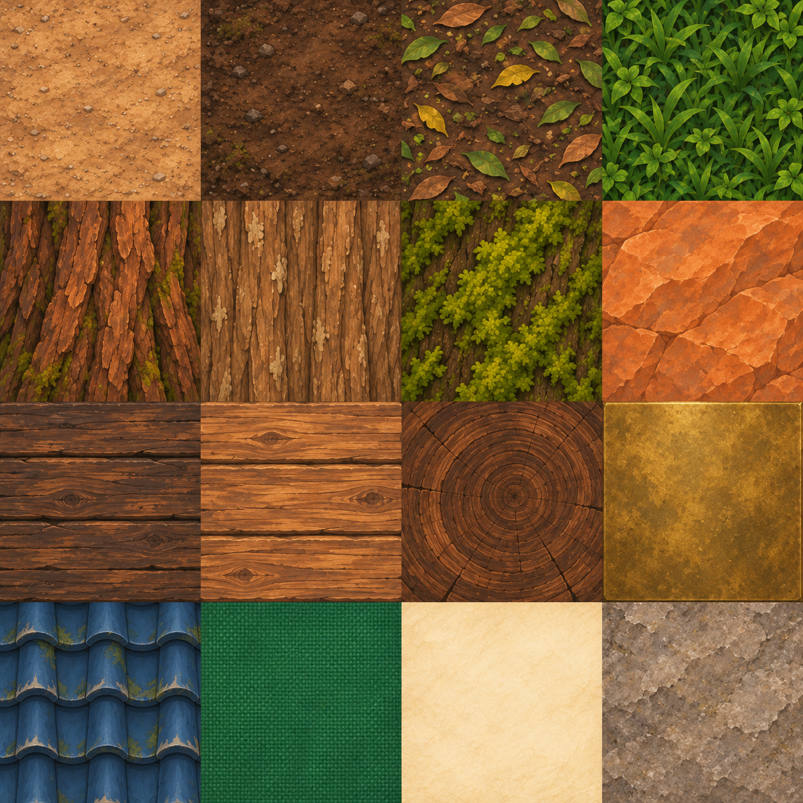
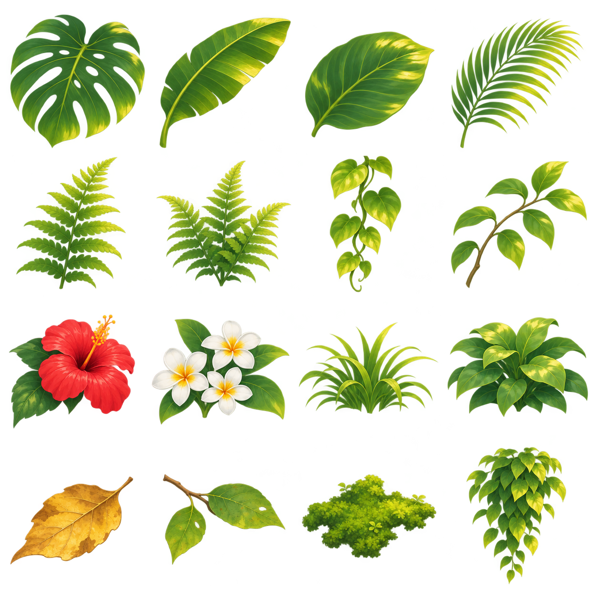
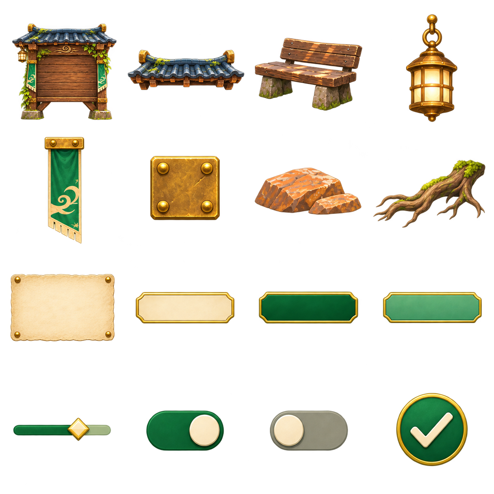

← Concepts de UIEntre as árvores
Passagem entre folhas até o quadro de opções. Apenas floresta ao fundo.

Baixar pacote completo · Mapa das 48 células
atlas-materiais-floresta-v1

- caminho arenoso
- terra umida
- serrapilheira
- grama
- casca arvore
- casca galho
- musgo na casca
- pedra laranja
- madeira quadro
- madeira banco
- topo madeira
- latao
- telhas azul marinho
- tecido jade
- pergaminho
- pedra fundacao
Baixar atlasatlas-vegetacao-floresta-v1

- monstera
- folha bananeira
- folha larga
- folha palmeira
- samambaia folha
- samambaia touceira
- cipo
- galho folhas
- hibisco
- flores brancas
- tufo grama
- arbusto
- folha seca
- graveto folhas
- musgo recorte
- folhagem pendente
Baixar atlasatlas-quadro-ui-floresta-v1

- quadro completo vazio
- telhado
- banco
- lanterna
- estandarte jade
- cantoneira latao
- pedras
- raiz
- painel pergaminho
- botao neutro
- botao selecionado
- botao hover
- slider
- toggle ligado
- toggle desligado
- selo confirmar
Baixar atlasAtlas conceituais para prototipagem. Leia o LEIA-ME para limites técnicos.